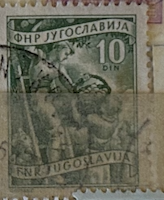
| SOURCE | TITLE| IMAGE MATCH | click to source page |
| postbeeld.com | Stamps with the theme Fruit - PostBeeld - Online Stamp Shop - Collecting | 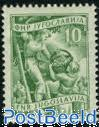 |
| eBay | Yugoslav | eBay | 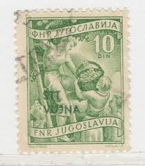 |
| eBay | YUGOSLAVIA, 1953 Picking Apples, Litho. 10d. Green, lhm. | eBay | 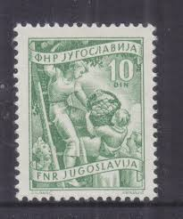 |
| Amazon.nl | Yugoslavia 721 1953 Locals Economy (Stamps for collectors) : Amazon.nl: Toys & Games | 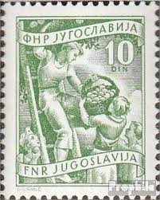 |
| stampsandstuff.net | Stamps from Yugoslavia | 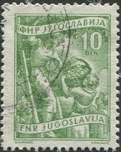 |
| eBay | Yugoslavia Agriculture Farm Animals Cows stamp 1965 A-24 | eBay | 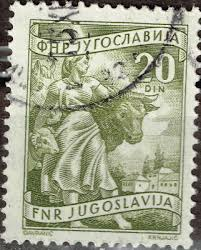 |
| Shutterstock | 8 Vujna Royalty-Free Images, Stock Photos & Pictures | Shutterstock | 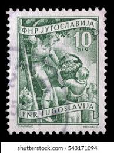 |
| Shutterstock | 3+ Hundred Coal Picture Shows Royalty-Free Images, Stock Photos & Pictures | Shutterstock | 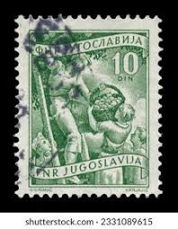 |
| eBay UK | YUGOSLAVIA 382 - Fruit Harvest "1953 Yellow Green" (pb12785) | eBay UK | 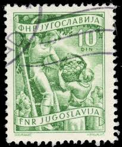 |
| Cherrystone Auctions | U.S. & Worldwide Stamps & Postal History - January 11-12, 2006 - TRIESTE ZONE B | 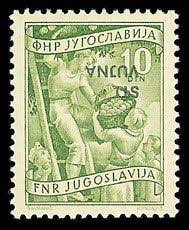 |
| eBay Australia | Yugoslavia 680A unmounted mint / never hinged 1951 clear brands (9931953 | eBay Australia | 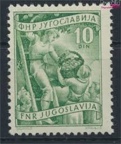 |
| Dreamstime.com | 360 People Power Stamp Stock Photos - Free & Royalty-Free Stock Photos from Dreamstime - Page 4 | 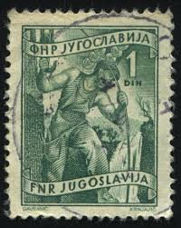 |
| Shutterstock | 2+ Thousand Women 1950 Royalty-Free Images, Stock Photos & Pictures | Shutterstock | 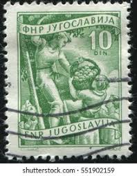 |
| DealBid | Featured Listings in Stamps > Europe > Yugoslavia - 10 items per page | DealBid | 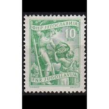 |
| Colnect | Yugoslavia : Stamps [Year: 1951] [1/7] : Colnect 📮 | 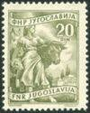 |
| Shutterstock | Yugoslavia Stamp No Circa Date Stamp Stock Photo 1275478741 | Shutterstock | 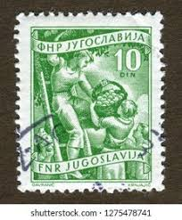 |
| sellosmundo.com | FNR. . Yugoslavia Europe ref. 335073 | 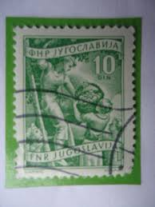 |
| Shutterstock | Yugoslavia Circa 1952 Stamp Printed Yugoslavia Stock Photo 1057243730 | Shutterstock | 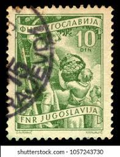 |
| Dreamstime.com | 5,452 Local Stamp Stock Photos - Free & Royalty-Free Stock Photos from Dreamstime | 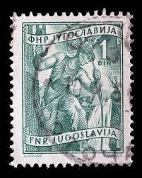 |
| Shutterstock | 4+ Thousand Yugoslavia Stamp Royalty-Free Images, Stock Photos & Pictures | Shutterstock | 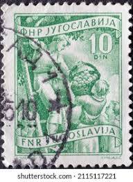 |
| Todocolección | yugoslavia - envío incluido - 16 sellos + 2 ban - Buy Antique stamps of Yugoslavia on todocoleccion | 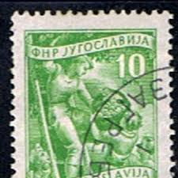 |
| Shutterstock | Singapore Paper Art: Over 4,802 Royalty-Free Licensable Stock Photos | Shutterstock | 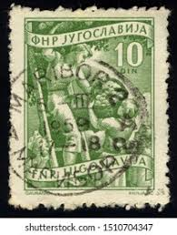 |
| Shutterstock | 5+ Hundred 1950 Construction Royalty-Free Images, Stock Photos & Pictures | Shutterstock | 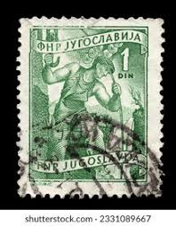 |
| Shutterstock | Iugoslávia: Over 54,200 Royalty-Free Licensable Stock Photos | Shutterstock | 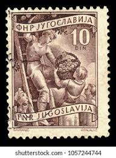 |
| Colnect | Stamp: High voltage technician (Yugoslavia(Definitives - Companies) Mi:YU 717,Sn:YU 378,Yt:YU 600,Sg:YU 717,AFA:YU 707,Un:YU 600 📮 | 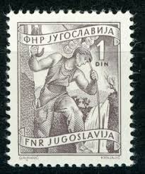 |
| Shutterstock | Yugoslavia Circa 1952 Cancelled Postage Stamp Stock Photo 1720252051 | Shutterstock | 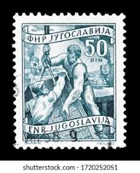 |
| Discover 40 filatelija Srbija and stamp ideas | serbia, postage stamps, stamp collecting and more |  | |
| HipStamp | Stamps Are Friends / HipStamp | 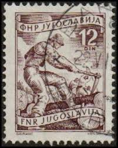 |
| Shutterstock | Ankara Türkiye 7132023 Yugoslavia Postage Stamp Stock Photo 2331089667 | Shutterstock | 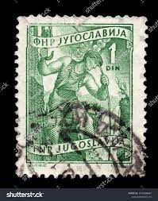 |
| Todocolección | yugoslavia, 10d, f.n.e. año 1954. sin usar - Buy Antique stamps of Yugoslavia on todocoleccion | 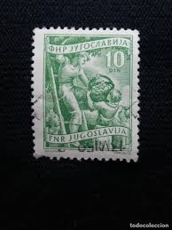 |
| Alamy | Philately postage stamp yugoslavia hi-res stock photography and images - Page 12 - Alamy | 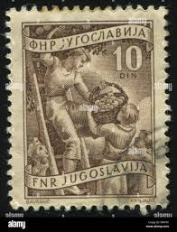 |
| FreeImages | Free farmers Stock Photos & Pictures | FreeImages | 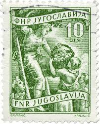 |
| Alamy | Yugoslavia Postage Stamp - Farmwoman harvesting sunflowers Stock Photo - Alamy | 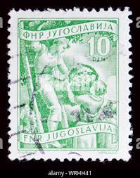 |
| Shutterstock | 1+ Thousand Forestry Post Royalty-Free Images, Stock Photos & Pictures | Shutterstock |  |
| Aukcijska Kuća Barac&Pervan | Barac&Pervan Auctions • Item | 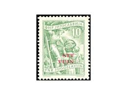 |
| HipStamp | Yugoslavia #347 overprint STT VUJNA used. | Europe - Yugoslavia, General Issue Stamp / HipStamp | 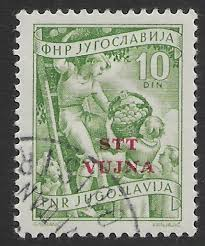 |
| Dreamstime.com | 110 Worker 1950 Stock Photos - Free & Royalty-Free Stock Photos from Dreamstime | 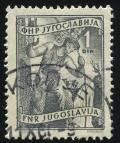 |
| Shutterstock | Yugoslavia Circa 1952 Stamp Printed Yugoslavia Stock Photo 120722197 | Shutterstock | 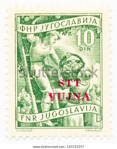 |
| iStock | Very Old Yugoslavian Stamp Stock Photo - Download Image Now - Apple - Fruit, Black Background, Blue-collar Worker - iStock | 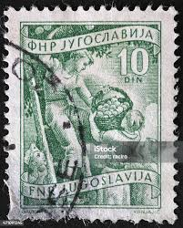 |
| Poppe Stamps | Poppe Stamps: Yugoslavia - Federal People?s Republic, 1950, 710, Women, Animals, Workers, Women, Animals, Workers - stamps for sale by theme and country | 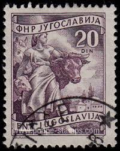 |
| Shutterstock | 4+ Thousand Philately Book Royalty-Free Images, Stock Photos & Pictures | Shutterstock | 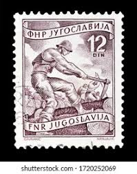 |
| Shutterstock | Ankara Türkiye 7132023 Yugoslavia Postage Stamp Stock Photo 2331089639 | Shutterstock | 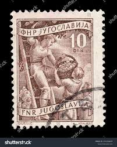 |
| Shutterstock | Yugoslavia Stamp No Circa Date Stamp Foto de stock 1275478741 | Shutterstock | 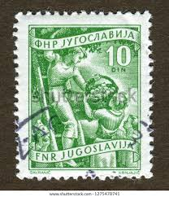 |
| Amazon.com | Amazon.com: Trieste - Zone B 111 unmounted Mint/Never hinged ** MNH 1954 Print Edition (Stamps for Collectors) : Toys & Games | 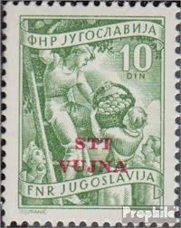 |
| Shutterstock | Ankara Türkiye 20 August 2021 Yugoslavia Stock Photo 2028221015 | Shutterstock | 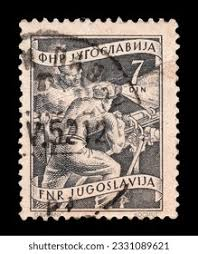 |
| HipStamp | Yugoslavia SC# 380 F-Vf MNH 1953 | Europe - Yugoslavia, General Issue Stamp / HipStamp | 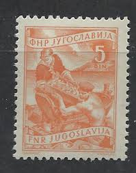 |
| Alamy | Vujna stt hi-res stock photography and images - Alamy | 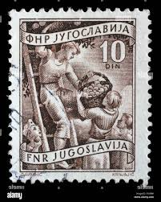 |
| Shutterstock | 3+ Thousand Circa 1950 Royalty-Free Images, Stock Photos & Pictures | Shutterstock | 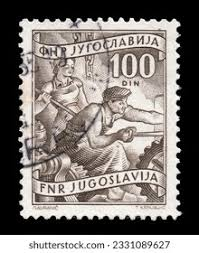 |
| Alamy | Stamp issued in Yugoslavia shows Steel worker, Local Economy series, circa 1952 Stock Photo - Alamy | 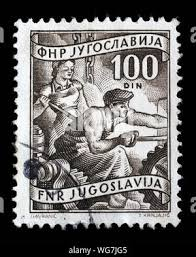 |
| Alamy | Stamp yugoslavia hi-res stock photography and images - Page 10 - Alamy | 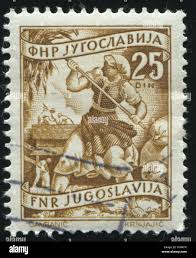 |
| Aukcijska Kuća Barac&Pervan | Barac&Pervan Auctions • Item | 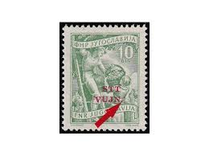 |
| Alamy | Stamp printed in Yugoslavia from the Local Tourism issue shows Rogaska Slatina, Slovenia, circa 1963 Stock Photo - Alamy | |
| eBay | WC1_1217 ITALY. Variety of the 50 cent. (pair) of 1929 IMPERIALE. Scott 221.MNH | eBay | |
| Colnect | Stamp: Construction workers (Yugoslavia(Definitives - Companies) Mi:YU 685A,Sn:YU 351,Yt:YU 596,Sg:YU 713,AFA:YU 676,SFK:YU 1008,Un:YU 596 📮 | |
| eBay | Yugoslavia Trieste 91 MNH Overprint Agriculture Block Zayix Stamps 0125S0119M | eBay | |
| Dreamstime.com | Woman Farm 1950 Stock Photos - Free & Royalty-Free Stock Photos from Dreamstime | |
| Delcampe | 7. Trieste - SLOVENIA - TRIESTE ZONA B - PIRANO - STT VUJNA - picking fruit - 4.5.1954. | |
| Shutterstock | Yugoslavia Dinar: Over 1,491 Royalty-Free Licensable Stock Photos | Shutterstock | |
| Alamy | Human adult industry, male mining, one grinding group (abstract), waste, two means of transport, job ants work disaster, women, containers, clothing, war and weapons pollution Stock Photo - Alamy | |
| Alamy | 1950 1952 hi-res stock photography and images - Alamy |